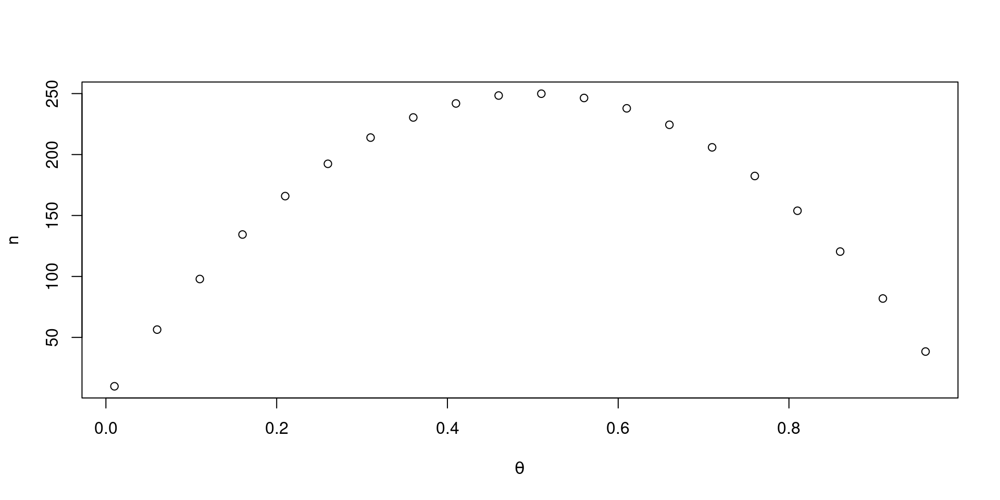
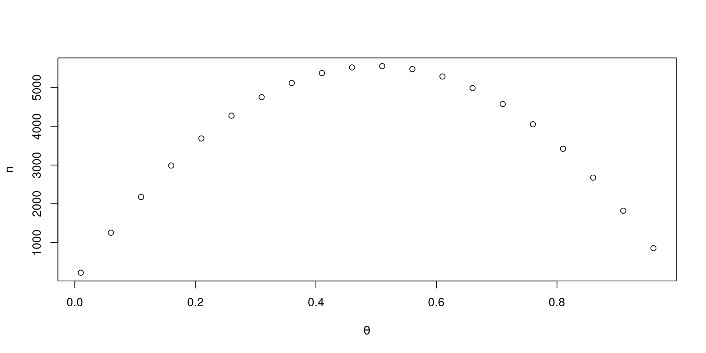

MD21 Introdução à Estatística
Valor esperado, desigualdades e teoria assintótica
Matriz de variancias e covariâncias
Sejam \(X = (X_1,X_2,\ldots,X_n)\) um vetor com \(n\) variáveis aleatórias. Defina \(\mathbb{V}(X_i) = \sigma_i^2\), \(\forall i\) e \(\mathbb{Cov}(X_i, X_j) = \sigma_{ij}\), \(\forall i\neq j\).
A matriz de variâncias e covariâncias é dada por
\[\Sigma = \left( \begin{array}{cc} \sigma_{1}^2 & \sigma_{12} & \ldots & \sigma_{1n} \\ \sigma_{1,2} & \sigma_{2}^2 & \ldots & \sigma_{2n} \\ \vdots & \vdots & \ddots & \vdots \\ \sigma_{n,1} & \sigma_{n,2} & \ldots & \sigma_{n}^2 \end{array} \right)\]
Propriedades
Se \(a = (a_1,\ldots,a_n)\) é um vetor de constantes e \(X = (X_1,X_2,\ldots,X_n)\) um vetor aleatório com média \(\mu = (\mu_1,\mu_2,\ldots,\mu_n)\) e matriz de variância \(\Sigma\). Então
\[\mathbb{E}[a^TX] = a^T\mu \qquad \qquad \mathbb{V}[a^TX] = a^T\Sigma a\]
Se \(A\) for uma matriz \(k\times n\), então \[\mathbb{E}[AX] = A\mu \qquad \qquad \mathbb{V}[AX] = A\Sigma A^T.\]
Normal-multivariada
Dizemos que o vetor \(X\) seguem uma distribuição normal multivariada, \(X \sim N(\mu, \Sigma)\), se \[f_X(x) = \frac{1}{(2\pi)^k |\Sigma|^{1/2} } \exp\left\{ -\frac{1}{2}(x-\mu)^T\Sigma^{-1}(x-\mu)\right\}\] onde \(|\Sigma|\) denota o determinante de \(\Sigma\), \(\mu\) é um vetor de tamanho \(n\) e \(\Sigma\) uma matriz \(n\times n\) simétrica, positiva definida.
Propriedades da normal multivariada
Suponha que o vetor \(X\) é particionado em dois vetor \(X_1\) e \(X_2\), \(X = (X_1, X_2)\)
De forma similar temos que
\[\mu=(\mu_1, \mu_2) \qquad \mbox{ e } \qquad \Sigma = \left( \begin{array}{cc} \Sigma_{11} & \Sigma_{12} \\ \Sigma_{21} & \Sigma_{22} \end{array}\right)\]
Propriedades da normal multivariada
Se \(X \sim N(\mu, \Sigma)\). Então
- A distribuição marginal: \(X_1 \sim N(\mu_1, \Sigma_{11})\)
- A distribuição condicional: \(X_2 | X_1 = x_1 \sim N(\mu_{2|1}, \Sigma_{2|1})\) onde \[\mu_{2|1} = \mu_2 + \Sigma_{21} \Sigma_{11}^{-1}(x_1-\mu_1) \\ \Sigma_{2|1} = \Sigma_{22} - \Sigma_{21}\Sigma_{11}^{-1}\Sigma_{12}\]
- Se \(a\) é um vetor, \(a^TX \sim Normal(a^T\mu, a^T \Sigma a)\)
- \(V = (x - \mu)^T\Sigma^{-1}(x-\mu) \sim \chi^2_n\)
Esperança condicional
A esperança condicional de \(X\) dado \(Y=y\) é
\[\mathbb{E}[X | Y=y] = \int x f_{X|Y=y}(x|Y=y) dx\]
Se \(h(x,y)\) é uma função de \(X\) e \(Y\) então
\[\mathbb{E}[h(X,Y) | Y=y] = \int h(x,y) f_{X|Y=y}(x|Y=y) dx\]
Esperança condicional
- \(\mathbb{E}[X]\) é um número (ou função de parâmetros)
- \(\mathbb{E}[X | Y=y]\) é uma v.a. (função de \(Y\))
Exemplo. Suponha que sorteamos um valor \(y\) de \(Y \sim U(0,1)\). Em seguida sorteamos \(X | Y=y \sim U( y, 1)\). Qual o valor esperado de \(X|Y=x\)?
\[\mathbb{E}[X|Y=y] = \int x f_{X|Y=y}(x|y) dy = \int_{y}^1 x\frac{1}{1-y} dx\]
\[= \frac{1}{(1-y)} \left. \frac{x^2}{2}\right|_y^1 = \frac{1-y^2}{2(1-y)} = \frac{1+y}{2}.\]
Esperança condicional
Para as variáveis aleatórias \(X\) e \(Y\), assumindo que os valores esperados existem, temos que
\[\mathbb{E}[\mathbb{E}[X|Y]] = \mathbb{E}[X] \qquad \qquad \mathbb{E}[\mathbb{E}[Y|X]] = \mathbb{E}[Y]\]
Prova. \[ \mathbb{E}[\mathbb{E}[X|Y]] = \int \mathbb{E}[X|Y=y] f_Y(y) dy \\ = \int \int x f_{X|Y=y}(x|y) dx f_Y(y) dy \]
\[= \int \int x f_{X,Y}(x,y) dydx = \int x f_{X}(x) dx \\ = \mathbb{E}[X]\]
Esperança condicional
No exemplo anterior, onde \(Y\sim U(0,1)\) e \(X|Y=y \sim U(y,1)\). Quem é \(\mathbb{E}[X]\)?
\[\mathbb{E}[X] = \mathbb{E}[\mathbb{E}[X|Y=y]] = \mathbb{E}[(1+Y)/2] \\ = (1 + (1/2)) / 2 = 3/4.\]
Exercício. Encontre \(\mathbb{E}[X]\) a partir da distribuição marginal de \(X\).
Esperança condicional
De forma mais geral, para as variáveis aleatórias \(X\) e \(Y\), assumindo que os valores esperados existem, temos que
\[\mathbb{E}[\mathbb{E}[h(X,Y)|Y=y]] = \mathbb{E}[h(X,y)]\]
Variancia condicional
A variância condicional é definida por \[\mathbb{V}(X|Y=y) = \int (X - \mathbb{E}[X|Y])^2 f_{X|Y}(x|y) dx\]
Teorema. Para duas v.a.s \(X\) e \(Y\)
\[\mathbb{V}(X) = \mathbb{E}[\mathbb{V}(X|Y=y)] + \mathbb{V}[\mathbb{E}(X|Y=y)]\]
Função geradora de momentos
A função geradora de momentos, f.g.m, de uma v.a. \(X\) é definida por
\[M_X(t) = \psi_X(t) = \mathbb{E}[e^{tX}] = \int e^{tX} f_X(x) dx, \quad t\in \mathbb{R}.\]
Propriedade 1: Se \(M_X(t)\) existe para \(t\) em um intervalo aberto contendo zero, então ela determina a distribuição de probabilidade de forma única.
Propriedade 2: Se \(M_X(t)\) existe para \(t\) em um intervalo aberto contendo zero, então \(M^{(r)}_X(t) = \mathbb{E}[X^r]\).
Exemplos (Exponencial)
Seja \(X \sim Exp(\lambda)\), \(f_X(x) = \lambda e^{-\lambda x}, \, \lambda >0.\)
\[M_X(t) = \mathbb{E}(e^{tX}) = \int_0^\infty e^{tx} \lambda e^{-\lambda x} dx \]
\[ = \lambda \int_0^\infty e^{-(\lambda - t) x} dx = \frac{\lambda}{\lambda - t} \int_0^\infty (\lambda - t) e^{-(\lambda - t) x} dx\]
\[ = \frac{\lambda}{\lambda - t}, \qquad t< \lambda.\]
Exemplos (Exponencial)
Se \(X \sim Exp(\lambda)\) então \[ M_X(t) = \frac{\lambda}{\lambda - t}, \qquad t< \lambda.\]
\[\mathbb{E}[X] = M'_X(0) = \left.-\frac{\lambda}{(\lambda - t)^2}(-1)\right|_{t=0}=\frac{1}{\lambda}\]
\[\mathbb{E}[X^2] = M''_X(0) = \left.-2\frac{\lambda}{(\lambda - t)^3}(-1)\right|_{t=0}=\frac{2}{\lambda^2}\]
\[\mathbb{V}(X) = \mathbb{E}[X^2] - \mathbb{E}[X]^2 = \frac{2}{\lambda^2} - \frac{1}{\lambda^2} = \frac{1}{\lambda^2}\]
Exemplo (Poisson)
Seja \(X \sim Poisson(\lambda)\), \(f_X(x) = \frac{\lambda^x}{x!}e^{-\lambda}, \, \lambda >0.\)
\[M_X(t) = \mathbb{E}(e^{tX}) = \sum_{x=0}^\infty e^{tx} \frac{\lambda^x}{x!}e^{-\lambda}\]
\[ = e^{-\lambda} \sum_{x=0}^\infty \frac{(\lambda e^{t})^x}{x!} = e^{-\lambda} e^{\lambda e^t}\]
\[ = e^{\lambda(e^t-1)}\]
Exemplos (Poisson)
Se \(X \sim Poisson(\lambda)\) então \[ M_X(t) = e^{\lambda(e^t - 1)}\]
\[\mathbb{E}[X] = M'_X(0) = \left. e^{\lambda(e^t - 1)} \lambda e^t \right|_{t=0} = \lambda \]
\[\mathbb{E}[X^2] = M''_X(0) = \left. \frac{d}{dt}\lambda e^{\lambda(e^t - 1)+t}\right|_{t=0} \\ = \left. \lambda e^{\lambda(e^t - 1)+t} (\lambda e^t + 1) \right|_{t=0} = \lambda^2 + \lambda\]
\[\mathbb{V}(X) = \mathbb{E}[X^2] - \mathbb{E}[X]^2 = \lambda^2 + \lambda - \lambda^2 = \lambda\] ## Exemplos (Normal) {.scrollable}
Seja \(X \sim Normal(\mu, \sigma^2)\), \(f_X(x) = \frac{1}{\sigma\sqrt{2\pi}} e^{-\frac{1}{2\sigma^2}(x-\mu)^2}\)
\[M_X(t) = \mathbb{E}(e^{tX}) = \int_{-\infty}^\infty e^{tx} \frac{1}{\sigma\sqrt{2\pi}} e^{-\frac{1}{2\sigma^2}(x-\mu)^2} dx \]
\[ = \int_{-\infty}^{\infty} \frac{1}{\sigma\sqrt{2\pi}} \exp\left\{ tx - \frac{1}{2\sigma^2}(x^2 - 2\mu x + \mu^2)\right\}dx\]
\[ = \int_{-\infty}^{\infty} \frac{1}{\sigma\sqrt{2\pi}} \exp\left\{ - \frac{1}{2\sigma^2}(x^2 - 2 x (\mu + t\sigma^2)+ \mu^2)\right\}dx\]
\[ = e^{\mu t + \frac{\sigma^2 t^2}{2}}\int_{-\infty}^{\infty} \frac{1}{\sigma\sqrt{2\pi}} \exp\left\{ - \frac{1}{2\sigma^2}(x - (\mu + t\sigma^2) )^2\right\} dx\]
\[ = \exp \left\{ \mu t + \frac{\sigma^2 t^2}{2} \right\}\]
Exemplos (Normal)
Se \(X \sim N(\mu, \sigma^2)\) então \[ M_X(t) = \exp \left\{ \mu t + \frac{\sigma^2 t^2}{2} \right\}.\]
\[\mathbb{E}[X] = M'_X(0) = \left. \exp \left\{ \mu t + \frac{\sigma^2 t^2}{2} \right\} (\mu + t\sigma^2)\right|_{t=0}= \mu \]
\[\mathbb{E}[X^2] = M''_X(0) = \left. \frac{d}{dt}\exp \left\{ \mu t + \frac{\sigma^2 t^2}{2} \right\} (\mu + t\sigma^2)\right|_{t=0} \]
\[ = \left. \exp \left\{ \mu t + \frac{\sigma^2 t^2}{2} \right\} (0 + \sigma^2)\right|_{t=0} \\ + \left. \exp \left\{ \mu t + \frac{\sigma^2 t^2}{2} \right\} (\mu + t\sigma^2)^2 \right|_{t=0}\]
\[ = \sigma^2 + \mu^2\]
\[\mathbb{V}(X) = \mathbb{E}[X^2] - \mathbb{E}[X]^2 = \sigma^2 + \mu^2 - \mu^2 = \sigma^2\]
Propriedades interessantes
Se \(Y = aX + b\), então \(M_Y(t) = e^{bt}M_X(at)\)
Se \(X_1, X_2,\ldots,X_n\) independentes com f.g.m \(M_{X_i}(t)\) e \(Y=\sum_iX_i\), então \[M_Y(t) = \prod_i M_{X_i}(t)\]
\[M_Y(t) = \mathbb{E}[e^{tY}] = \mathbb{E}\left[e^{t \sum_i X_i} \right] = \mathbb{E}\left[ \prod_i e^{t X_i} \right]\]
(por independência) \[ = \prod_i \mathbb{E}\left[ e^{t X_i} \right] = \prod_i M_{X_i}(t)\]
Exemplo
Sejam \(X_1, X_2,\ldots, X_n\) v.a.s com distribuição \(X_i \sim Poisson(\lambda_i)\), e \(Y = \sum_{i=1}^nX_i\).
Vimos que a f.g.m. da Poisson é dada por \[M_{X_i}(t) = e^{\lambda_i(e^t-1)}\]
\[M_Y(t) = \prod_{i=1}^{n} e^{\lambda_i(e^t-1)} = e^{ (\sum_i \lambda_i) (e^t-1)}\]
. . . Logo,
\[Y \sim Poisson\left(\sum_{i=1}^{n} \lambda_i \right)\]
Principais desigualdades
Desigualdade de Markov
Seja \(X\) uma v.a. não negativa com esperança finita, \(\mathbb{E}[X] < \infty\). Para qualquer \(t>0\), \[\mathbb{P}(X > t) \leq \frac{\mathbb{E}[X]}{t}.\]
Prova. \[\mathbb{E}(X) = \int_0^\infty x f_X(x)dx = \int_0^t x f_X(x)dx + \int_t^\infty x f_X(x)dx\]
\[ \geq \int_t^\infty x f_X(x)dx \geq t \int_t^\infty f_X(x)dx = t \mathbb{P}(X>t)\]
Desigualdade de Chebyshev
Seja \(X\) uma variável aleatória com media, \(\mu\), e variância, \(\sigma^2\), finitas. Então
\[\mathbb{P}(|X - \mu| \geq t) \leq \frac{\sigma^2}{t^2} \]
Prova.
\[\mathbb{P}(|X - \mu| \geq t) = \mathbb{P}((X - \mu)^2 \geq t^2) \]
(aplicando a desigualdade de Markov)
\[ \leq \frac{\mathbb{E}[(X-\mu)^2]}{t^2} = \frac{\sigma^2}{t^2}.\]
Teoria assintótica
Principais ideias
Lei forte dos grandes números. Dizemos que a média de \(n\) v.a.s com valor esperado \(\mu = \mathbb{E}[X_i]\) converge (em probabilidade) para para \(\mu\),
Teorema central do limite. Dizemos que \(\sqrt{n}(\bar{X}_n - \mu)\) converge em distribuição para a distribuição Normal.
Tipos de convergencia
Seja \(X_1, X_2, \ldots\) uma sequência de variáveis aleatórias, e seja \(X\) outra variável aleatória. Seja \(F_{i}\) a função de distribuição acumulada de \(X_i\), e \(F\) a f.d.a de \(X\).
- Dizemos que \(X_n\) converge em probabilidade para \(X\), \(X_n \xrightarrow{P} X\), se, para todo \(\epsilon >0\), \[\mathbb{P}(|X_n - X| > \epsilon) \xrightarrow[n \to \infty]{} 0\]
- Dizemos que \(X_n\) converge em distribuição para \(X\), \(X_n \xrightarrow{D} X\), se \[\lim_{n\to \infty} F_n(t) = F(t)\] para todo \(t\) na qual \(F\) é contĩnua.
- Se \(X_n \xrightarrow{P} X\), então \(X_n \xrightarrow{D} X\). (A recíproca não é verdadeira)
Lei fraca dos grandes números
Se \(X_1, X_2, \ldots, X_n\) são variáveis aleatórias iid (independentes e identicamente distribuídas) com média, \(\mathbb{E}[X_i] = \mu\) e variância, \(\sigma^2 < \infty\), então \[\bar{X}_n = \frac{\sum_{i=1}^{n} X_i}{n} \xrightarrow{P} \mu\]
Prova. (Usando a desigualdade de Chebyshev) \[\mathbb{P}(|\bar{X}_n - \mu| > \epsilon) \leq \frac{\mathbb{V}(\bar{X}_n)}{\epsilon} = \frac{\sigma^2}{n\epsilon} \xrightarrow[n\to \infty]{}0.\]
Lei fraca dos grandes números (exemplo)
Suponha uma sequencia de experimentos independentes de bernoulli com probabilidade \(\theta \in (0,1)\). Sabemos que \(\bar{X}_n \xrightarrow[]{P}\theta\). Quantos experimentos eu preciso realizar para que meu erro seja menor que 10% com probabilidade de pelo menos 90%?
\[\{n : \mathbb{P}(|\bar{X}_n - \theta| < 0.1) \geq 0.90\}\]
\[\mathbb{P}(|\bar{X}_n - \theta| < 0.1) = 1 - \mathbb{P}(|\bar{X}_n - \theta| > 0.1) \]
Pela desigualdade de Chebyshev \[ \geq 1 - \frac{\mathbb{V}(\bar{X}_n)}{0.1^2}\]
\(\mathbb{V}(\bar{X}_n) = \theta(1-\theta)/n\) \[ \geq 1 - \frac{\theta(1-\theta)100}{n}\]
\(1 - \theta(1-\theta) 100 / n \geq 0.90\) se \(n \geq \theta(1-\theta) 100 / (1-0.9) = \theta(1-\theta) 1000\)
Lei fraca dos grandes números (exemplo)
\[\{n : \mathbb{P}(|\bar{X}_n - \theta| < 0.1) \geq 0.90\}\]
Lei fraca dos grandes números (exemplo)
\[\{n : \mathbb{P}(|\bar{X}_n - \theta| < 0.03) \geq 0.95\}\]
Teorema central do limite
Seja \(X_1, X_2, \ldots, X_n\) variáveis aleatórias iid com média, \(\mathbb{E}[X_i] = \mu\) e variância, \(\sigma^2 < \infty\). Seja \(\bar{X}_n = \frac{\sum_{i=1}^{n} X_i}{n}\). Então \[Z_n = \frac{(\bar{X}_n - \mu)}{\sigma/\sqrt{n}} \xrightarrow[n\to \infty]{D} Z\] onde \(Z \sim N(0,1).\)
Teorema central do limite
Seja \(X_1, X_2, \ldots, X_n\) variáveis aleatórias iid com média, \(\mathbb{E}[X_i] = \mu\) e variância, \(\sigma^2 < \infty\). Seja \(\bar{X}_n = \frac{\sum_{i=1}^{n} X_i}{n}\) e \(S^2_n = \frac{1}{n-1}\sum_{i=1}^{n}(X_i-\bar{X}_n)^2\). Então \[Z_n = \frac{(\bar{X}_n - \mu)}{S_n/\sqrt{n}} \xrightarrow[n\to \infty]{D} Z\] onde \(Z \sim N(0,1).\)